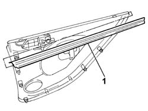

7010D30 rear side descending window glass scraper (inner) r r
- Path
- Procedures > 70 FITTINGS > 7010 PASSENGER COMPARTMENT REAR SIDE DOORS > 7010D rear side door window glasses > 7010D30 rear side descending window glass scraper (inner) r r
- Kind
- repair procedure (removal / refitting; the operation number is the code)
- Applies to
- all engines; all production periods
- Interactive page
- https://sloeber94.github.io/elrnDB-fPnd/en/#/2753107
Applies to: all engines; all production periods
 Removing
Removing
 Refitting
Refitting7010D38 rear side door manual window mechanism handle/ring-nut r r
7010C44 interior handle panel - r r
7010E10 rear side door inner panel - r r or replace
1. Release the glass scraper from the internal door panel and remove it.

Applies to: all engines; all production periods
Refitting
RemovingPlace the interior glass scraper in position on the door panel.
7010E10 rear side door inner panel - r r or replace
7010C44 interior handle panel - r r
7010D38 rear side door manual window mechanism handle/ring-nut r r
Topics linked from this page (3)
- 7010C44 interior handle panel - r r
- 7010D38 rear side door manual window mechanism handle/ring-nut r r
- 7010E10 rear side door inner panel - r r or replace